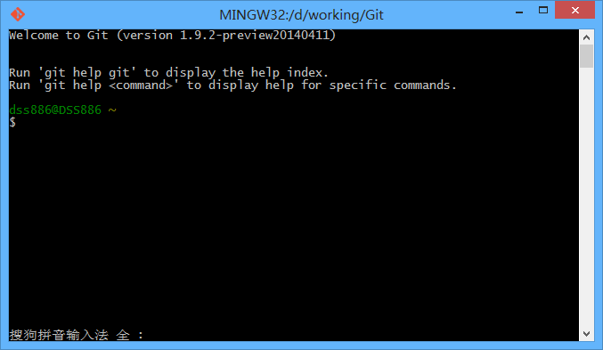

这篇文章主要介绍了什么是Github Page，以及如何用Github Page搭建一个免费的、无限流量的个人博客并绑定独立域名。
一、前言
1.1 为什么要用Github Page搭建博客
借用阮一峰的话说，
喜欢写Blog的人，会经历三个阶段。
1. 第一阶段，刚接触Blog，觉得很新鲜，试着选择一个免费空间来写。
2. 第二阶段，发现免费空间限制太多，就自己购买域名和空间，搭建独立博客。
3. 第三阶段，觉得独立博客的管理太麻烦，最好在保留控制权的前提下，让别人来管，自己只负责写文章。
那么Github Page无疑就是第三个阶段最Geek范儿的选择了。
1.2什么是Github Page
简单的说，Github是一个具有版本管理功能的代码仓库，每个项目都有一个主页，列出项目的源文件。
但是对于一个新手来说，看到一大堆源码，只会让人头晕脑涨，不知何处入手。
他希望看到的是，一个简明易懂的网页，说明每一步应该怎么做。
因此，github就设计了Pages功能，允许用户自定义项目首页，用来替代默认的源码列表。
所以，github Pages可以被认为是用户编写的、托管在github上的静态网页。
二、安装本地Git环境
2.1 安装MyGit
首先在Github上注册账号，然后下载Windows下的Git客户端MyGit，一路next至安装完毕。
找到桌面的Git Bash，双击打开，熟悉的命令行界面就出来了。

使用cd命令进入你想要的目录，比如我进入了d:/working/Git
2.2 修改Git Bash默认工作路径
值得注意的是，一般情况下打开Git Bash后默认的路径一般都是C:/Users/用户名，每次工作都得切换到常用的目录下，此操作是重复且没有意义的。
我们打开Git安装位置\etc\profile文件，找到
# normalize HOME to unix path
HOME="$(cd "$HOME" ; pwd)"
export PATH="$HOME/bin:$PATH"
增加两行，修改后结果如下：
# normalize HOME to unix path
HOME="你想要修改的HOME路径"
HOME="$(cd "$HOME" ; pwd)"
cd
export PATH="$HOME/bin:$PATH"
更多的修改路径及自定义Bash路径变量，参考这里
至此，本地的Git环境已经搭建完毕。
三、配置Github
3.1 本地生成SSH公钥
为了保证与服务器通信的安全，Github只提供HTTPS和SSH两种连接方式，这里我们使用SSH。
在Git bash中输入
$ ssh-keygen -t rsa -C "your_email@youremail.com"
看到以下信息，输入你的Github密码：
# Creates a new ssh key using the provided email Generating public/private rsa key pair.
Enter file in which to save the key (/home/you/.ssh/id_rsa):
Enter passphrase (empty for no passphrase): [Type a passphrase]
Enter same passphrase again: [Type passphrase again]
然后你在你的目录下会发现有一个.ssh目录，里面有一个id_rsa文件和一个id_rsa.pub文件，说明SSH私钥和公钥已经成功生成了。
3.2 将SSH公钥添加到Github
在Github网站上找到Account Setting -> "SSH Keys" -> Add SSH key，将id_rsa.pub中的内容粘贴到key一栏，点击add key按钮。
在Git Bash中输入以下代码测试：
ssh -T git@github.com
如果你看到了以下结果，说明成功了：
The authenticity of host 'github.com (207.97.227.239)' can't be established.
RSA key fingerprint is 16:27:ac:a5:76:28:2d:36:63:1b:56:4d:eb:df:a6:48.
Are you sure you want to continue connecting (yes/no)?[Type yes]
Hi username!
You've successfully authenticated, but GitHub does not provide shell access.
四、创建你的Github Page
登录https://github.com/yourname，点击Repositories -> New创建一个新的仓库。
注意，Repository name一定要设置为yourname.github.io，其他选项默认，点确认
然后在这个仓库的页面https://github.com/yourname/yourname.github.io的右边栏点Settings
往下拉找到GitHub Pages -> Automatic Page generator，一路Next即可
等几分钟，访问http://yourname.github.io就能看到你创建的页面了。
五、本地修改网页和上传
在仓库页面右边栏，有一个SSH clone URL，将里面的内容复制下来
在Git Bash中输入：
$ git clone 你复制的内容
看看你的工作目录下，Github帮你自动生成的网站就被复制下来了，目录结构类似于：
--images
--javascripts
--stylesheets
index.html
params.json
尝试更改一下index.html，比如将
<title>Test</title>
改成：
<title>我的博客</title>
然后在Git Bash里面依次输入下面三个命令
$ git add -A
$ git commit -m "change title of index.html"
$ git push
这三个命令的意义及更多git命令的用法，见这里
上传完毕后，等几分钟，刷新页面，就会发现页面的标题已经变成“我的博客”了。
六、自定义博客的主题和页面
Github Page只是一个静态页面托管服务，也就是说不能运行php和mysql等程序。
Github Page允许站内生成网页（比如我们刚刚做的那样），
也允许用户自己编写网页上传，只不过上传的网页会经过Jekyll程序的再处理。
用Github Page建立博客的思路：
- 使用Jekyll语言人工编写符合规范的代码上传（不推荐）
- 使用基于Jekyll的Octopress静态博客系统搭建（推荐）
- 使用其他基于Jekyll的静态博客主题，比如HPSTR或Hexo（推荐）
这里使用的是HPSTR主题，它的示例链接是这里
它本身就是一个Github Page，我们找到它的git地址clone下来
$ git clone git@github.com:mmistakes/hpstr-jekyll-theme.git
复制它的文件到你自己的文件夹里，然后按照配置提示修改参数、上传即可
HPSTR主题里有几篇默认文章，讲解了一下如何写文章以及一些简单的Markdown语法等等。
其他主题的安装方法也很类似，就不一一说明了。
七、绑定域名
如果你想要显得更Geek一点，还可以绑定独立域名。
假设你已经有一个域名yourname.com，在你的代码仓库的根目录下创建一个名为CNAME的文件，注意没有后缀名。
里面写入你要绑定的域名，比如youname.com
然后前往你的域名托管商处，新增一条CNAME类型的解析记录，指向yourname.github.io
根据域名托管商的默认TTL设置的不同，解析生效需要10分钟至24小时不等。
等解析生效，你就可以使用你的独立域名访问博客了。
（完）